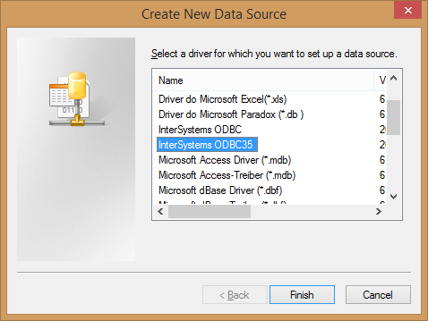
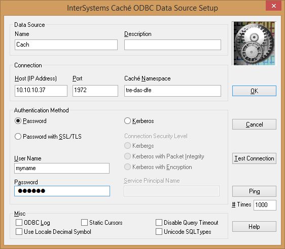
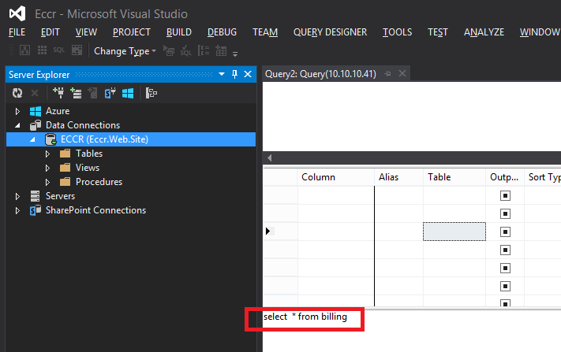

How to connect Visual Studio 2013 to Intersystems Caché through ODBC
5 December 2014
Update: Don't use the ODBC driver. We later found it to be buggy. Use the native Cache.Data.dll driver for ADO.NET instead.
- Install the 32 bit driver: cache.2014.1.0.ODBCDriver_x86.exe
- Start menu - administrative tools - ODBC data sources 32 bit - system DSN - AddChoose Intersystems ODBC or 35 (the 35 is just a 3.5 ODBC version and will use 2.5 protocol where necessary, so it makes no difference): 
- Enter your database details and save after testing the connection: 
- In Visual Studio open your web.config file and add:
<configuration>
<connectionStrings>
<add name="MyConnection" connectionString="Dsn=Cach" providerName="System.Data.Odbc"/>
</connectionStrings>
- Browse to the database Server Explorer and secondary click to run a new query:
SSMS fails
Unfortunately connecting to SQL Server Management Studio is not as easy. Neither the 32 bit nor 64 bit connections work and allow me to run queries. I've posted a Stackoverflow.com question about the problem here.